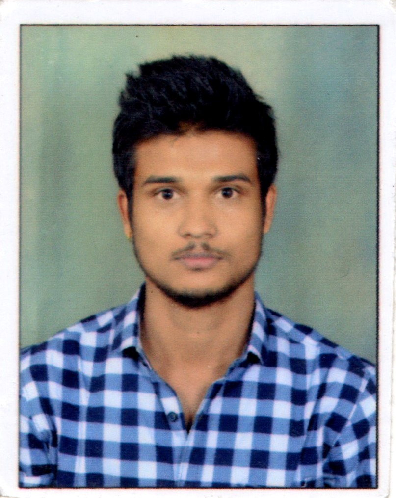

Main menu
February 2022
Resume Project
Abhishek Soudagar
•
Yesterday

index (1).html
HTML

sty (1).css
Style Sheet
Class comments
<!DOCTYPE html>
<html lang="en">
<head>
    <meta charset="UTF-8"
    <meta name="viewpoint" content="width=device-width, initial-scale=1.0">
       <title>Document</title>
       <link rel="stylesheet" href="style.css">
       
</head>
<body>
    <header>
       <div class="user">
       
       <h5 class="nm">Akash M Lashkari</h5>
       <p class="jb">Bachelor Engineer</p>
       </div>
       <nav class="nv">
          <ul>
             <li><a href="#Details">Details</a></li>
             <li><a href="#Education">Education</a></li>
             <li><a href="#Technical Skills">Technical Skills</a></li>
             <li><a href="#Project">Project</a></li>
          </ul>
       </nav>
    </header>
    <section class="Details" id="Details">
        <h1 class="heading"><span>Details About Me</span></h1>
        <div class="Row">
        <div class="det">
             <h3><span>Name: </span>Akash Mahadu Lashkari</h3>
             <h3><span>Age: </span>24</h3>
             <h3><span>Gender: </span>Male</h3>
             <h3><span>Email: </span>akashlashkari72@gmail.com</h3>
             <h3><span>Phone_no: </span>+91 9960965340</h3>    
             
        </div>
    </div>
    </section>
<section class="Education" id="Education">
    <h1 class="title"><span>Education</span></h1><br><br><br>
    <table>
        <tr>
            <th>Cource</th>
            <th>Name of the Institude</th>
            <th>University</th>
            <th>Percentage/CGPA</th>
        </tr>
        <tr>
            <td>SSC</td>
            <td>Gove. Sec. Ashram School</td>
            <td>Maharashtra State Board</td>
            <td>67.82</td>
        </tr>
        <tr>
            <td>Diploma</td>
            <td>Nutan Maharashtra Vidya Politechnic</td>
            <td>MSBTE</td>
            <td>75.5</td>
        </tr>
        <tr>
            <td>BE</td>
            <td>DY Patil College Of Engineering</td>
            <td>SPPU</td>
            <td>7.04</td>
        </tr>
    </table>
</section>
<br><br><br><br><br><br>
<section class="Technical Skills" id="Technical Skills">
    <h1 class="head"><span>Technical Skills</span></h1>
    <div>
    <ul id="lis">
        <li>Java</li>
        <li>C++</li>
        <li>HTML</li>
        <li>CSS</li>
        <li>JavaScript</li>
        <li>Angular</li>
        <li>Oracle</li>
        <li>MySQL</li>
        <li>Python</li>
        <li>Manual Testing</li>
        <li>Automation Testing</li>
        <li>Data Structures</li>
        <li>AutoCAD</li>
        <li>Catia</li>
    </ul>
</div>
</section>
<!--<section class="Project" id="Project">
    <h1 class="heading"><span>Project</span></h1>
    <div class="Row">
        <div class="det">
    <h3><span>Role: </span>Team member</h3>
    <h3><span>Title: </span>Eye state detection of driver</h3>
    <h3><span>Description: </span>Developing intelligent systems to prevent accidents
                can be bery effective in minimizingaccident death toll. 
                Drivers fatigue is one of the major causes of traffic 
                accidents,particularly for drivers of large vehicles
                (such as buses and heavy trucks)due to prolonged driving
                in working conditions. This project detects the signs of 
                fatigue and sleepiness in the face of the person at the 
                time of driving in this model, the person's face is filmed 
                by a camera in the first step by receiving video sequence, 
                the level of drowsiness is detected.</h3>
            </div>
</div>
</section> -->
</body>
</html>
index (1).html
Displaying index (1).html.